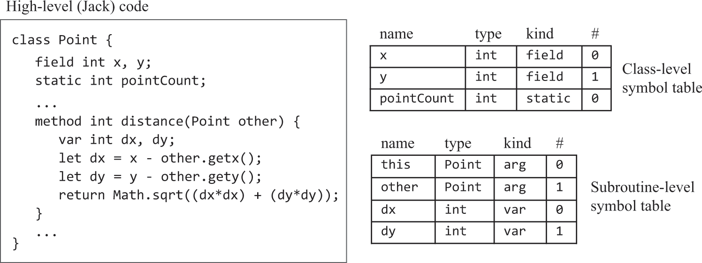
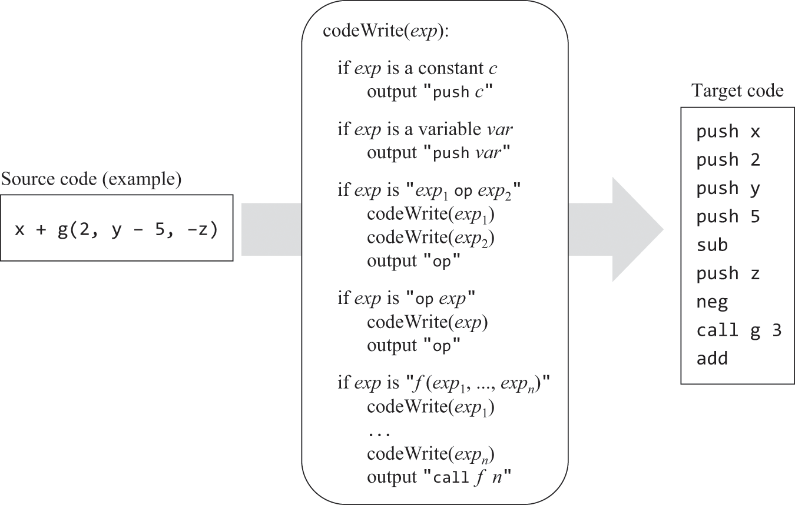
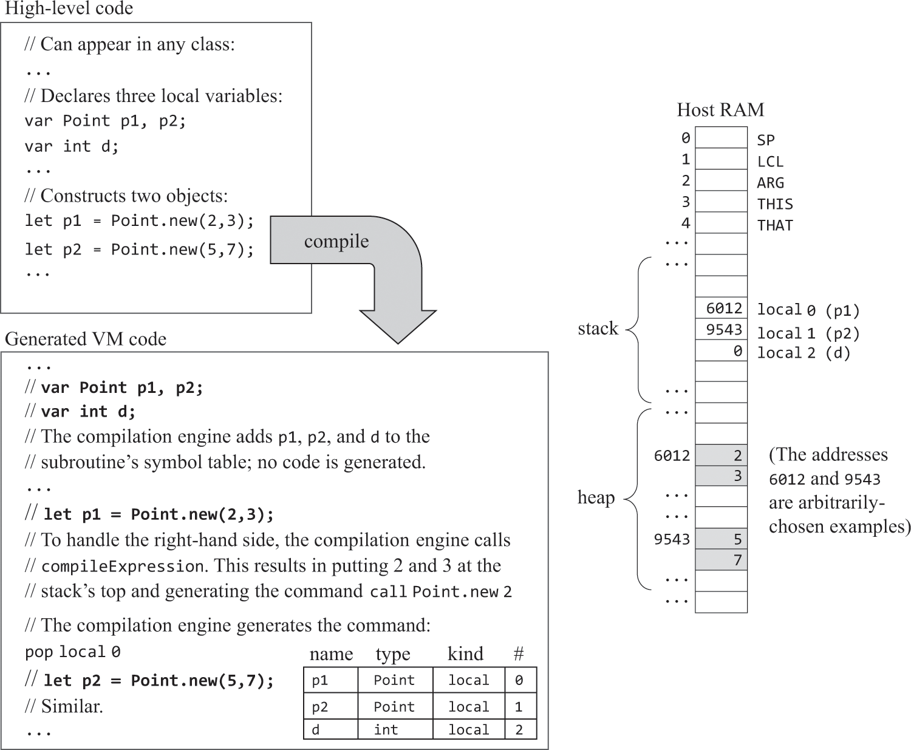
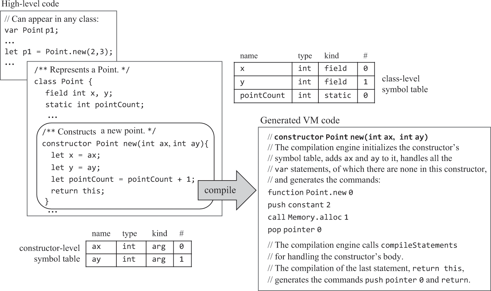
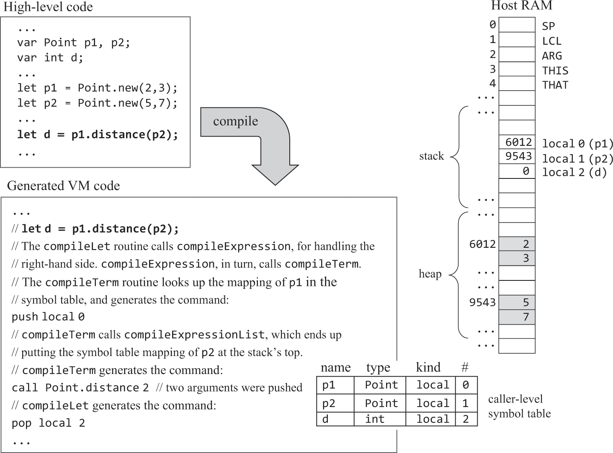
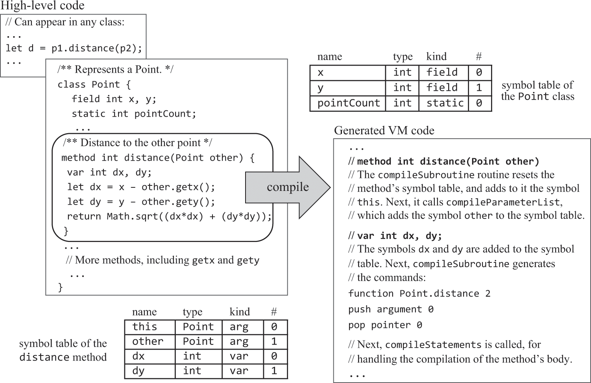
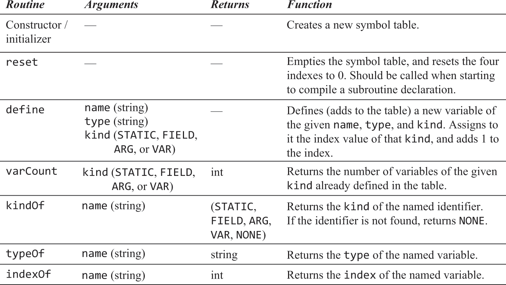
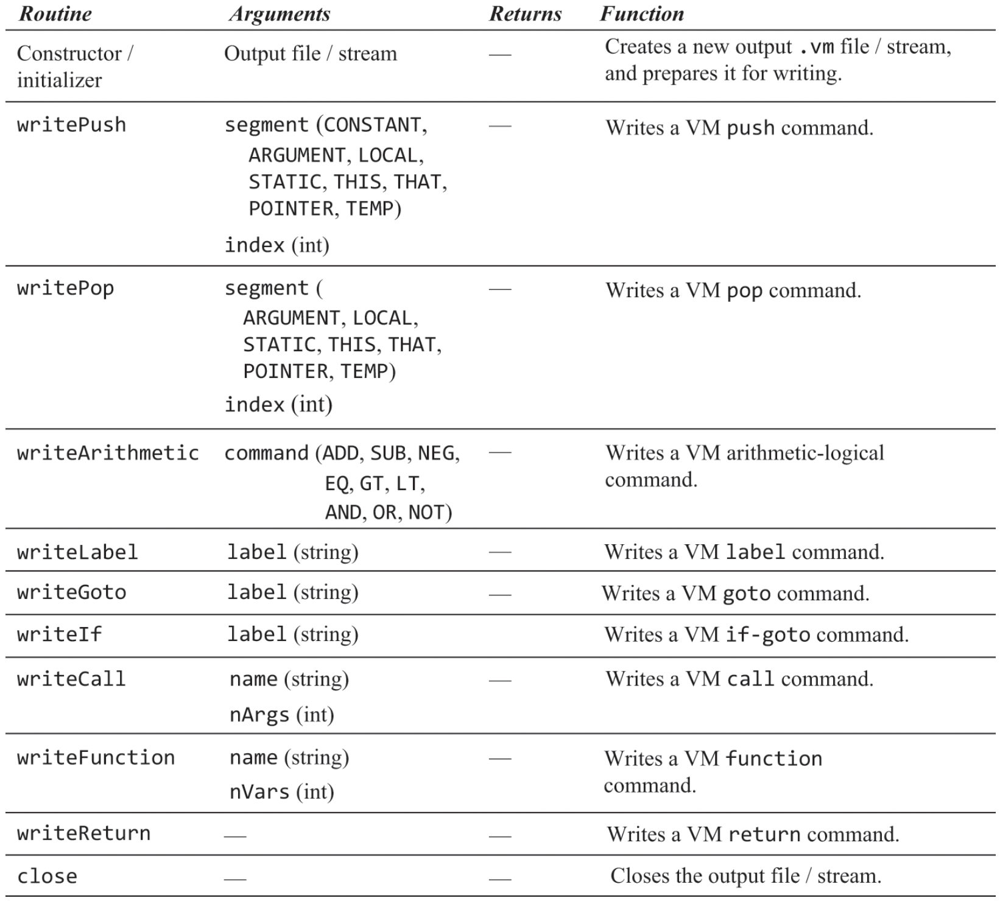

Jack语言——编译器（生成vm）
变量
生命周期
这里无需处理生命周期，已在07和08章的VM翻译器中实现了：
· 静态（类级）：和代码同生死。在汇编中以"@CLASS名.变量名"方式作为汇编变量出现。
· 字段（实例级）：和对象同生死。构造函数为对象开辟空间就是为它所有的字段开辟空间。
· 局部变量（方法级）：和方法同生死。汇编中在实际的函数跳转发生前，由调用者负责为被调用者的局部变量开辟空间，并将LCL修改到正确的位置。
符号表
· 就像汇编器用符号表记录vm变量和RAM地址的关系一样，这里也需要用符号表记录Jack变量和VM内存地址的关系。
· 但高级语言中在不同作用域/生命周期（static/field、var）下可存在同名变量，本例使用两个符号表（类级、局部级）分别存储，这两个表分别在每次遇到 “class”、“constructor/method/funciton”时被初始化。method需要初始化一个this条目，在下面叙述。

作用域
· 编译器应当先从局部符号表取值，没有的话再检查类级符号表，这被称为“内部作用域隐藏外部作用域”。本例只有这两种作用域级别，对于其他支持无限嵌套 作用域的语言，可以使用链表形式实现符号表（⚠️没明白咋实现）。
表达式
· 需要把运算符的中缀表示转为后缀表示（包括函数调用），所以需要修改上一章的CompilationEngine.compileExpression()，使其以后缀方式输出表达式。

字符串
-
Jack标准库封装了String类（标准库在12章中实现，现在只需假定已经存在）用以处理字符串，字符串常量写法是语法糖。这个过程和大多数高级语言的处理 相似，但Jack不提供垃圾回收。
-
例如：x = “abc”; 编译器将按如下代码处理。
-
x = String.new();
-
x = x.appendChar(‘a’);
-
x = x.appendChar(‘b’);
-
x = x.appendChar(‘c’);
-
语句
return（return x + y;
先翻译x + y，其值自然会出现在栈顶，然后直接生成return即可。
let（let x = y + 1;
先翻译y + 1，结果位于栈顶，再pop到x在符号表中绑定的vm内存地址。数组处理在下面叙述。
do（do className.functionName(…)
do调用的方法不一定有返回值，如何知道方法是否有返回值？不能，那就让所有方法都必须有返回值(void返回0)，在do中一定会抛弃返回值：pop temp 0
if、while
在vm语言中把它们转成用goto、if-goto表达，要先处理条件表达式，好让其值位于栈顶作为跳转判断条件。
* if示例
…
条件表达式的boolean值
(bool取反)
if-goto 失败标签
if成立的逻辑
goto 后续标签
失败标签
[else的逻辑]
后续标签
…
* while示例
…
while开始标签
条件表达式的boolean值
(bool取反)
if-goto 后续标签
while成立的逻辑
goto while开始标签
后续标签
…
* 布尔取反
书中设计的true/false分别用-1/0表示，在图8.1/图11.6中分别使用了neg/not试图互换true/false，但我觉得错误，因为按照定义(图7.5)，neg只是
将符号互换，而not是按位取反。所以Jack中的"非"不能直接用vm表示，vm中缺乏这样的直接表达。而在将Jack的if/while/~翻译成vm时都需要布尔取反，如果
不修改vm中not的定义，就只能让Jack编译器生成vm代码把-1和0互换：（虽然随书工具的VMEmulator可以将not解释为true/false互换，但我自己做的不可以
呀，而且这不符合vm中not的定义）
…
// 布尔值已位于栈顶
if-goto TO_FALSE
push constant 1
neg
goto NEXT
TO_FALSE
push constant 0
NEXT
…
对象
· 对象被存储在堆中一块儿单独为其开辟的空间上，为对象开辟空间就是为其所有字段开辟空间。因为字段的生死是随对象的，所以不能存在栈上，栈这种结构是 为了方法调用，只存方法运行状态。通过将基址存到this，后续使用"this 索引"引用这些字段。下面描述的数组需要将元素地址存到that，然后通过that 0就可 操作元素本身，这就是为啥要把this、that做成强绑定pointer 0/1，因为这样就可以做成指针，对that 0的访问就等同于*(pointer 1)。

访问控制：无
Jack中所有变量/字段全部私有，所有函数/方法全部公有。
构造函数
· 和其他方法/函数的区别在于，在正式翻译方法指令前，要先按如下示例开辟空间并将基址赋值this。构造函数末尾必须是 return this（push pointer 0; return;），即将this值返回。（⚠️从书中来看，貌似把对象地址赋给THIS，就叫做“对齐”？）

实例方法
· 实例方法的调用有两种：x.method(y)、method(y)。为了方便编译器实现(CompilationEngine.compileSubroutineCall())，Jack规定只有同类 实例方法才能像后者这么用，而它是隐式的this.method(y)。实例方法是被设计用来操作实例数据的，不同对象的实例数据不同。但汇编里可没有某个对象的方法 这种概念，方法只是一堆指令集，只能将调用者作为参数传入方法，而被调用者会将其作为this以引用实例数据。本例设计将this作为第一个参数。
· Jack语言不支持继承。在继承中，子类可以选择重写父类方法，最后执行的到底是子类方法还是父类方法取决于子类有没有重写这个方法，这在编译期是无法 确定的。由于Jack不支持继承，所以所有的方法调用都可以在编译时进行静态编译。

· 既然实例方法参数列表的第一个永远是this，那么编译器需要为实例方法的符号表初始化一条记录：<this 类名 arg 0>。
· 真正编译实例方法指令前，应先按如下示例将arg 0赋给this（pointer 0）。

数组
· 编译器通过Array类实现数组语义，那么数组引用存的是数组在堆中的基址，将数组引用的值与索引相加得到一个内存地址，这个内存地址（存在that指针上） 上的值（通过that 0获得）就是数组元素的值。

如果是let arr[x] = y呢？THAT只有一个，它会被重写，上述方式无法工作。采用如下方式实现：
push arr
(compileExpression)
add
// 目标地址已位于栈顶
(compileExpression)
// 源值已位于栈顶，暂存到temp
pop temp 0
// 将目标地址移至that
pop pointer 1
// 将源值写到RAM[目标地址]上
push temp 0
pop that 0
习题
代码位于https://github.com/woieha320r/nand2tetris/tree/main/JackCompiler/src/com/example
JackTokenizer（标记化
与10章完全相同
SymbolTable（符号表

VMWriter（代码生成

CompilationEngine
API与10章相同，但这里输出的是vm代码而不是xml